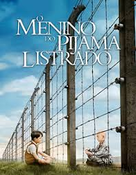

O filme:O menino do pijama listrado,foi lançado em 2008,dirigido por Mark Herman, baseado no livro de John Boyne.Apresenta o drama do holocausto,mostrando como era a realidade e a desumanidade vivida na época.lembrando que o filme se passa durante a segunda querra mumdial,onde Hitler era ditador do Reich Alemão.
Durante a segunda guerra mundial,Bruno e sua família se mudam de Berlim,deixando seus amigos e avós.Eles se mudam para perto de um campo de concentração,poís o pai dele havia de se tornar comandante.A vida de bruno passou a ser intediante, até se aventurar e conhecer um menino, que ficava dentro do campo de concentração e usava um "pijama listrado".Bruno passou a brincar com o menino quase todos os dias,sem que seus pais percebessem,mas sabia que não deveria estar ali.O pai dele como um comandante de confiança,costumava receber visitas importantes,como a de Adolf Hitler,e outros comandantes.
Bruno e Gretel,sua irmã, tinham aula em casa, eles aprendiam sobre o nazismo,mas apenas Gretel entendia realmente, até porquê ele tinha apenas oito anos,o rapaz via o pai como um exemplo de pessoa,por ser de tal forma,importante para o país.Mas Bruno ainda vai aprender muitas coisas durante toda essa história.
No filme, quando Bruno se machuca ao cair do balanço,Pavel o ajuda com o curativo, porém a mãe de Bruno não gostava de que o filho ficasse perto das pessoas que "trabalhavam" na casa, isso porquê, havia uma grande discriminação,mesmo se as pessoas que ficavam no campo de concentração,obtivessem cargos ditos como "importantes" na sociedade,Pavel por exemplo era um médico,mas pelo fato de ser judaico,era visto como uma "aberração".